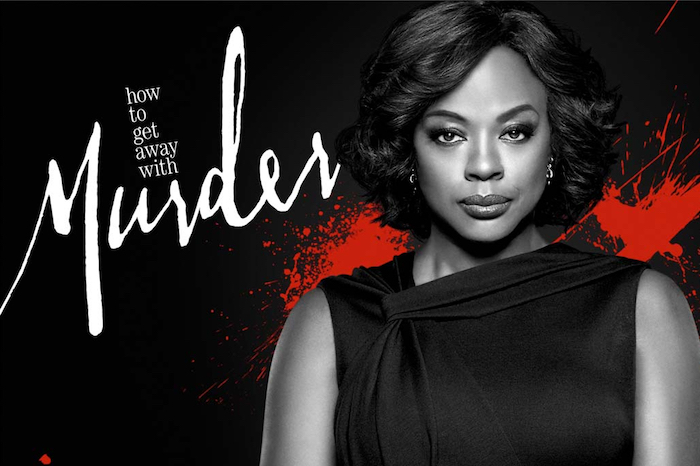
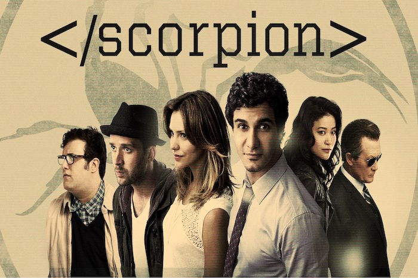

Joëlle's series collection
Welcome to my world. Here is a ranking of my favorite series. The order doesn't matter.

Comédie
Romance
Friends
By Marta Kauffman & David Crane
Les péripéties de six jeunes new-yorkais liés par une profonde amitié. Entre amour,
travail et
famille, ils partagent leurs bonheurs et leurs soucis.

Comédie
Romance
How I Met Your Mother
By Carter Bays & Craig Thomas
Le Ted du futur raconte en 2030 à ses enfants comment il a rencontré leur mère en
écumant les soirées hallucinantes avec ses meilleurs amis.

Comédie
Drame
Orange is the new black
By Jenji Kohan
Une new-yorkaise privilégiée finit en prison quand elle est rattrapée par son
passé criminel.

Policier
Thriller
How to Get Away with Murder
By Peter Nowalk
La série raconte l’histoire d'Annalise Keating, professeure de droit pénal et
avocate renommée à la tête de son propre cabinet à Philadelphie. Chaque année,
quelques-uns de ses étudiants ont le privilège de travailler dans son cabinet. Mais
un jour, ces derniers sont impliqués dans un meurtre…

Fantasy
Drame
Game of Thrones
By David Benioff, D. B. Weiss & George R. R. Martin
Neuf familles nobles rivalisent pour le contrôle du Trône de Fer dans les sept
royaumes de Westeros. Pendant ce temps, des anciennes créatures mythiques oubliées
reviennent pour faire des ravages.

Science-fiction
Fantastique
Stranger Things
By Matt Duffer & Ross Duffer
À Hawkins, dans l'Indiana, en 1983. Lorsque Will Byers disparaît de son domicile,
ses amis se lancent dans une recherche semée d'embûches pour le retrouver.

Épouvante-horreur
Drame
The Walkind Dead
By Frank Darabont
Rick Grimes cherche sa femme et son fils après s'être réveillé d'un long coma. Il
découvre alors un monde désolé, ravagé par une terrible épidémie.

Thriller
Science-fiction
Black Mirror
By Charlie Brooker
Chaque épisode de cette anthologie montre la dépendance des hommes vis-à-vis de tout
ce qui
a un écran et les conséquences de cette dépendance.

Policier
Drame
Scorpion
By Nick Santora
Inspiré d'une histoire vraie, le projet est centré Walter, un génie excentrique, et
son réseau international de super-génies qui forment la dernière ligne de défense
contre les menaces complexes du monde moderne.

Fantastique
Drame
The Umbrella Academy
By Jeremy Slater & Steve Blackman
Une famille de super-héros déjantés se réunit pour tenter de résoudre le mystère
entourant la mort de leur père, la menace d'une apocalypse et bien plus encore.
Adaptée de la bande dessinée de Gerard Way et Gabriel Bá.